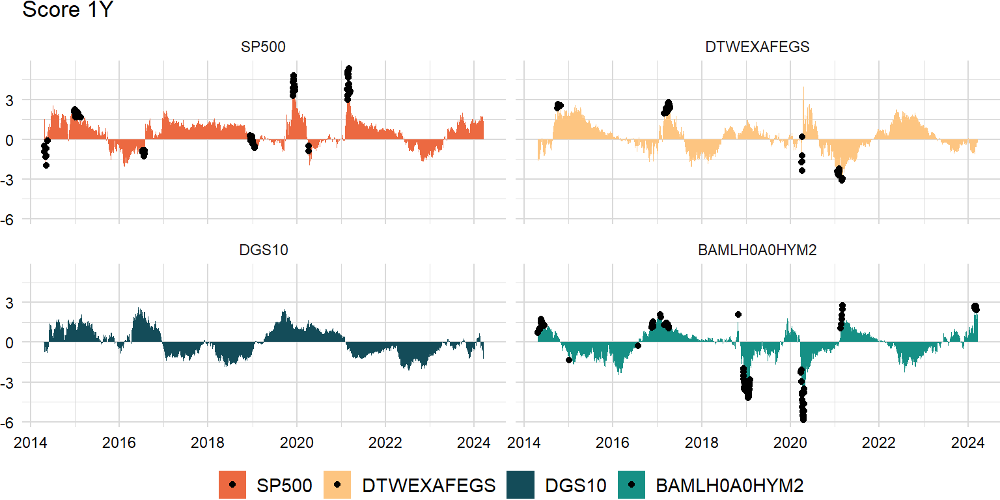
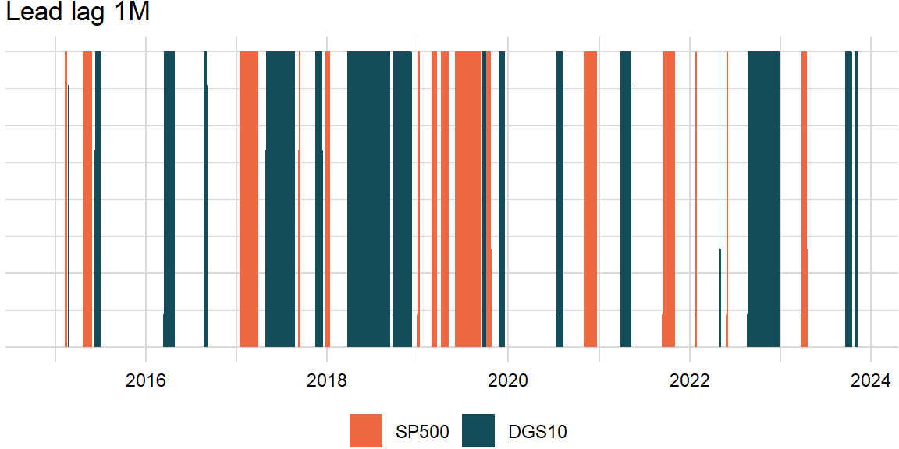

library(reticulate)
library(data.table)
source("../plot/theme_jjf.R")import pandas as pd
import numpy as np
import statsmodels.api as sm
import pandas_datareader as pdr
from scipy.stats import norm, chi2factors_r = ["SP500", "DTWEXAFEGS"] # "SP500" does not contain dividends; note: "DTWEXM" discontinued as of Jan 2020
factors_d = ["DGS10", "BAMLH0A0HYM2"]
factors = factors_r + factors_d
width = 252
scale = {"periods": 252, "overlap": 5}levels_df = pdr.get_data_fred(factors, start = "1900-01-01")returns_df = levels_df.apply(lambda x: np.log(x).diff() if x.name in factors_r else -x.diff() / 100)
overlap_df = returns_df.rolling(scale["overlap"], min_periods = 1).mean()
returns_df = pd.concat([returns_df, overlap_df], keys = ["returns", "overlap"], axis = 1)Price momentum
One month reversal and 2-12 month momentum are two ends of the spectrum. The general trend indicates that positive acceleration leads to reversals or negative acceleration leads to rebounds. An unsustainable acceleration leading to reversal can reconcile the one-month reversal and 2-12 month momentum. The key is that it implies that acceleration is not sustainable.
# "Momentum, Acceleration, and Reversal"
def pnl(x):
return np.nanprod(1 + x) - 1order = 20momentum_df = returns_df["returns"].shift(order).rolling(width - order, min_periods = 1).apply(pnl, raw = False).dropna()momentum_mlt <- melt(as.data.table(py$momentum_df, keep.rownames = "index"), id.vars = "index")
momentum_mlt[ , index := as.Date(index)]
momentum_plt <- plot_ts_decomp(momentum_mlt, decomp = "Total", title = "Momentum 1Y (%)") +
facet_wrap(~ variable, scales = "free")Warning: The `size` argument of `element_line()` is deprecated as of ggplot2 3.4.0.
ℹ Please use the `linewidth` argument instead.print(momentum_plt)Time-series score
Suppose we are looking at \(n\) independent and identically distributed random variables, \(X_{1},X_{2},\ldots,X_{n}\). Since they are iid, each random variable \(X_{i}\) has to have the same mean, which we will call \(\mu\), and variance, which we will call \(\sigma^{2}\):
\[ \begin{aligned} \mathrm{E}\left(X_{i}\right)&=\mu\\ \mathrm{Var}\left(X_{i}\right)&=\sigma^{2} \end{aligned} \]
Let’s suppose we want to look at the average value of our \(n\) random variables:
\[ \begin{aligned} \bar{X}=\frac{X_{1}+X_{2}+\cdots+X_{n}}{n}=\left(\frac{1}{n}\right)\left(X_{1}+X_{2}+\cdots+X_{n}\right) \end{aligned} \]
We want to find the expected value and variance of the average, \(\mathrm{E}\left(\bar{X}\right)\) and \(\mathrm{Var}\left(\bar{X}\right)\).
Expected value
\[ \begin{aligned} \mathrm{E}\left(\bar{X}\right)&=\mathrm{E}\left[\left(\frac{1}{n}\right)\left(X_{1}+X_{2}+\cdots+X_{n}\right)\right]\\ &=\left(\frac{1}{n}\right)\mathrm{E}\left(X_{1}+X_{2}+\cdots+X_{n}\right)\\ &=\left(\frac{1}{n}\right)\left(n\mu\right)\\ &=\mu \end{aligned} \]
Variance
\[ \begin{aligned} \mathrm{Var}\left(\bar{X}\right)&=\mathrm{Var}\left[\left(\frac{1}{n}\right)\left(X_{1}+X_{2}+\cdots+X_{n}\right)\right]\\ &=\left(\frac{1}{n}\right)^{2}\mathrm{Var}\left(X_{1}+X_{2}+\cdots+X_{n}\right)\\ &=\left(\frac{1}{n}\right)^{2}\left(n\sigma^{2}\right)\\ &=\frac{\sigma^{2}}{n} \end{aligned} \]
def risk(x):
n_rows = sum(~np.isnan(x))
if n_rows > 1:
result = np.sqrt(np.nansum(x ** 2) / (n_rows - 1))
else:
result = np.nan
return result# volatility scale only
score_df = (momentum_df / momentum_df.rolling(width, min_periods = 1).apply(risk, raw = False)).dropna()# overall_df = score_df.mean(axis = 1)
# overall_df = overall_df / overall_df.rolling(width, min_periods = 1).apply(risk, raw = False)# score_df.insert(loc = 0, column = "Overall", value = overall_df)
# score_df = score_df.dropna()score_mlt <- melt(as.data.table(py$score_df, keep.rownames = "index"), id.vars = "index")
score_mlt[ , index := as.Date(index)]
score_plt <- plot_ts_decomp(score_mlt, decomp = "Overall", title = "Score 1Y", multiple = 1) +
facet_wrap(~ variable)
print(score_plt)
Outlier detection
Outliers are defined the regression residuals that fall below \(Q_{1}−1.5\times IQR\) or above \(Q_{3}+1.5\times IQR\):
def outliers(z):
n_cols = z.shape[1]
result = pd.DataFrame()
for j in range(n_cols):
y = z.iloc[:, j]
if (n_cols == 0):
x = range(len(y))
else:
t = range(len(y))
x = np.concatenate((np.matrix(t).T, z.drop(z.columns[j], axis = 1)), axis = 1)
x = sm.add_constant(x)
coef = sm.WLS(y, x).fit().params
x = x[:, 1:]
predict = coef[0] + np.matmul(coef[1:], x.T)
resid = y - np.ravel(predict)
lower = resid.quantile(0.25)
upper = resid.quantile(0.75)
iqr = upper - lower
total = y[(resid < lower - 1.5 * iqr) | (resid > upper + 1.5 * iqr)]
total = pd.DataFrame({"date": total.index, "symbol": total.name, "values": total})
result = result.append(total, ignore_index = True)
result = result.pivot_table(index = "date", columns = "symbol", values = "values")
return resultoutliers_df = outliers(score_df)outliers_mlt <- melt(as.data.table(py$outliers_df, keep.rownames = "index"), id.vars = "index")
outliers_mlt[ , index := as.Date(index)]
outliers_plt <- score_plt +
geom_point(data = outliers_mlt, aes(x = index, y = value, fill = variable))
print(outliers_plt)Granger causality
\[ \begin{aligned} \left(R\hat{\beta}-r\right)^\mathrm{T}\left(R\hat{V}R^\mathrm{T}\right)^{-1}\left(R\hat{\beta}-r\right)\xrightarrow\quad\chi_{Q}^{2} \end{aligned} \]
- https://github.com/cran/lmtest/blob/master/R/waldtest.R
- https://en.wikipedia.org/wiki/Wald_test#Test(s)_on_multiple_parameters
- https://math.stackexchange.com/a/1591946
def granger_test(x, y, order):
# compute lagged observations
lag_x = x.shift(order)
lag_y = y.shift(order)
# collect series
df = pd.DataFrame({"x": x, "y": y, "lag_x": lag_x, "lag_y": lag_y})
x_mat = sm.add_constant(np.matrix(df[["lag_y", "lag_x"]]))
y_mat = np.matrix(df["y"]).T
# fit full model
fit = sm.WLS(y_mat, x_mat, missing = "drop").fit()
R = np.matrix([0, 0, 1])
coef = np.matrix(fit.params)
r = 0 # technically a matrix (see Stack Exchange)
matmul = np.matmul(R, coef.T) - r
maatmul_mid = np.linalg.inv(np.matmul(R, np.matmul(np.matrix(fit.cov_params()), R.T)))
wald = np.matmul(matmul.T, np.matmul(maatmul_mid, matmul))
result = 1 - chi2.cdf(wald, 1)
return resultdef roll_lead_lag(x, y, width, order, p_value):
n_rows = len(x)
x_name = x.name
y_name = y.name
result = pd.DataFrame()
for i in range(width - 1, n_rows):
x_y_status = False
y_x_status = False
idx = range(max(i - width + 1, 0), i + 1)
x_y = granger_test(x.iloc[idx], y.iloc[idx], order)
y_x = granger_test(y.iloc[idx], x.iloc[idx], order)
if (x_y < p_value) and (y_x > p_value):
x_y_status = True # x leads y
elif (x_y > p_value) and (y_x < p_value):
y_x_status = True # y leads x
# dynamic column names
total = pd.DataFrame([[x_y_status, y_x_status]], columns = [x_name, y_name])
result = result.append(total, ignore_index = True)
result.index = x.index[(width - 1):]
return resultp_value = 0.05score_x_df = score_df.loc[:, "SP500"]
score_y_df = score_df.loc[:, "DGS10"]lead_lag_df = roll_lead_lag(score_x_df, score_y_df, width, order, p_value)lead_lag_mlt <- melt(as.data.table(py$lead_lag_df, keep.rownames = "index"), id.vars = "index")
lead_lag_mlt[ , index := as.Date(index)]
lead_lag_plt <- plot_ts_decomp(lead_lag_mlt, decomp = "Total", title = "Lead lag 1M", palette = palette) +
theme(axis.text.y = element_blank())
print(lead_lag_plt)